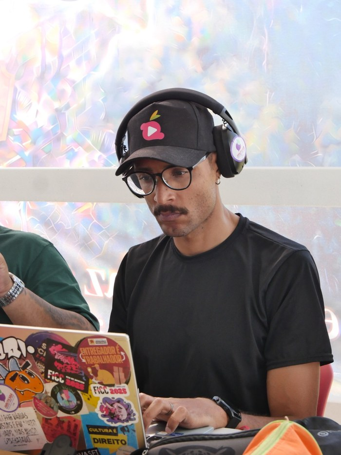

História
Universidade Federal Fluminense (UFF)Base sólida em narrativa, contexto e pesquisa — fundamento de toda construção de história visual que faço hoje.
Filmmaker · Editor de vídeo · Social mídia · Fotógrafo · Designer · Operador e criador por IA
Mais de 10 anos criando comunicação digital para marcas e instituições — da estratégia à imagem, com inteligência artificial no processo de criação, gestão e automação.

Quem sou eu
Sou caiçara, nascido e criado em Angra dos Reis. Peguei numa câmera pela primeira vez aos 10 anos — e não larguei mais. Aos 19, já estava fotografando e filmando casamentos e eventos culturais pela cidade, aprendendo na prática o que nenhuma faculdade ensina sozinha: como estar no momento certo, no lugar certo, pra contar a história certa.
Formado em História pela UFF e hoje me aprofundando em Comunicação, Marketing Digital e Neurociências, busco unir duas bagagens — a de quem entende narrativa e contexto, e a de quem entende como a mente das pessoas realmente presta atenção, sente e lembra. O resultado é um jeito de fotografar, filmar e comunicar que não é só bonito: é pensado pra gerar conexão de verdade.
Já atendi grandes marcas como Estácio, IBMEC e Vivo Empresas. Desde 2019 atuo à frente da minha própria agência, a Jábu Comunicação, com dezenas de clientes no Rio de Janeiro, São Paulo, Minas Gerais e Brasília — usando inteligência artificial na criação, gestão e automação de conteúdo.
“Umuntu ngumuntu ngabantu — eu sou porque nós somos.” Filosofia Ubuntu, pensamento africano
Formação
Bagagem construída entre história, comunicação e ciência do comportamento humano.
Base sólida em narrativa, contexto e pesquisa — fundamento de toda construção de história visual que faço hoje.
Aprofundamento em estratégia de comunicação e marketing aplicados às plataformas digitais.
Entender como o cérebro presta atenção, aprende e lembra — aplicado à forma como construo comunicação visual.
Experiência
Mais de dez anos entre fotografia, audiovisual, design e gestão de redes — hoje à frente da própria agência.
Casamentos, projetos sociais, shows e teatro pela cidade.
Estácio · UVA · Ibmec
Início da própria agência — atuando como MEI desde então.
Estácio · Ibmec · Damásio · Escola Nacional dos Concursos
Instituto Nossa Senhora da Piedade (INSP — Jacarepaguá)
Pela Jábu Comunicação, atendendo Secretaria de Cultura e Vereador Leonardo Giordano, Secretaria das Culturas de Niterói, mentora Carol Barreto, maquiadora Vicky Mebarak, Brotaí Niterói e Centro Eco Cultural Piratininga.
Atuação fotográfica contínua, registrando os bastidores por trás da produção.
Seguindo em constante aprendizado, trabalhando todos os dias pra me tornar referência em fotografia, filmmaking e comunicação.
Skills & números
Participamos do lançamento do álbum de dois artistas, que hoje somam mais de 23 mil streams.
Participamos do lançamento de dois produtos no mercado de afiliados, em um deles vendendo mais de R$350 mil.
Gestão e estratégia de comunicação digital para marcas e instituições.
Produção audiovisual e fotografia para campanhas e eventos.
Identidade visual e peças gráficas para campanhas e marcas.
Criação, gestão e automação de conteúdo com inteligência artificial.
Portfólio
Uma seleção de trabalhos recentes — clique pra ver no Instagram.
Seis trabalhos reais — documentário, evento acadêmico, seminário, clipe musical, congresso científico e entrevista.
Design & Marketing
Posts, promoções e lançamentos criados para marcas, instituições e artistas. Clique para ampliar.
Identidade visual · outdoor · comercial de TV · panfletos · cartão de visita · brindes.
Conteúdo & Fotografia
Clientes & projetos


Contato